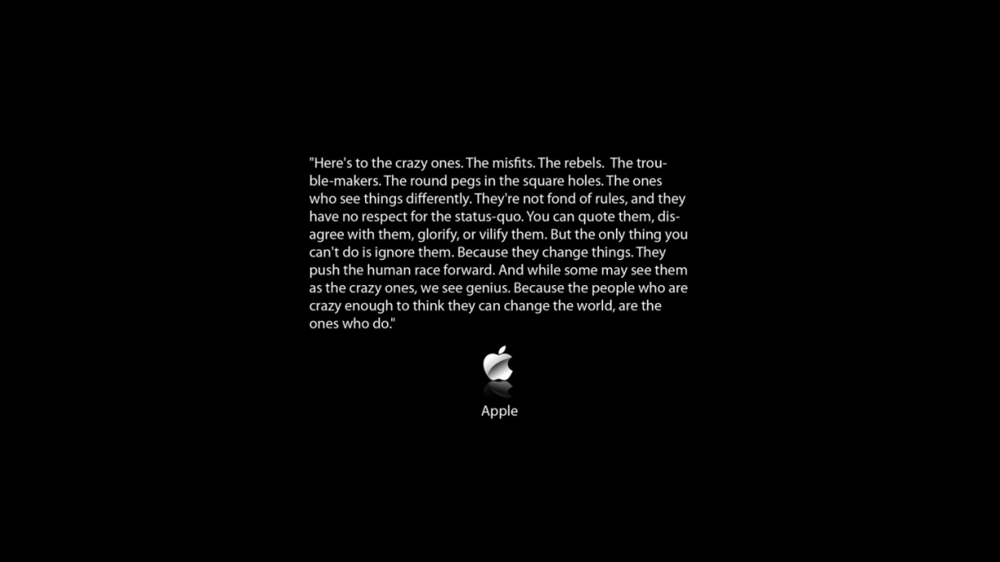
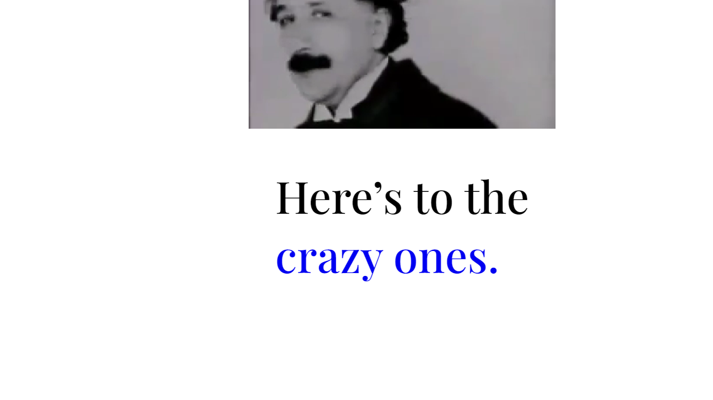
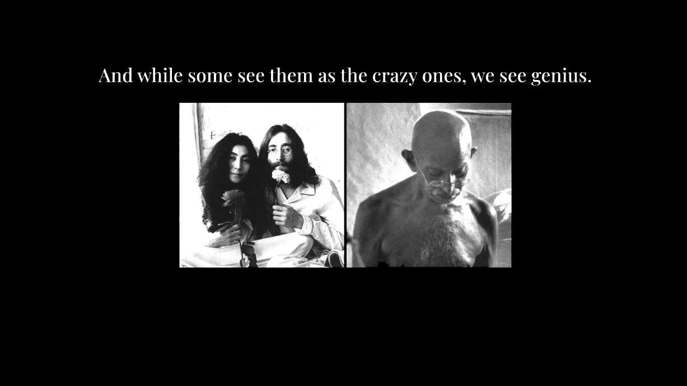

Week 6-7
For this project we were tasked with composing a piece of writing that can be experienced on a browser. I choose Apple's "Think Different" manifesto.
Given that this manifesto's text is very inspiring, raw, and powerful, I decided to use colors that showcase that. Moreover, as this is Apple's manifesto, I decided to keep the design simple and clean.
The idea for the final design was to make sure that the text flows. The manifesto needed to follow a structure and be expressive enough to showcase what it wants to communicate.
